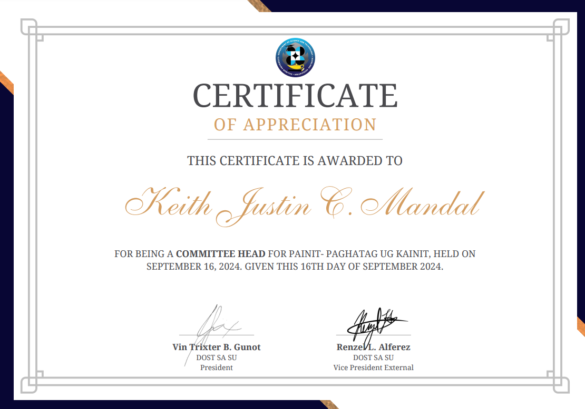
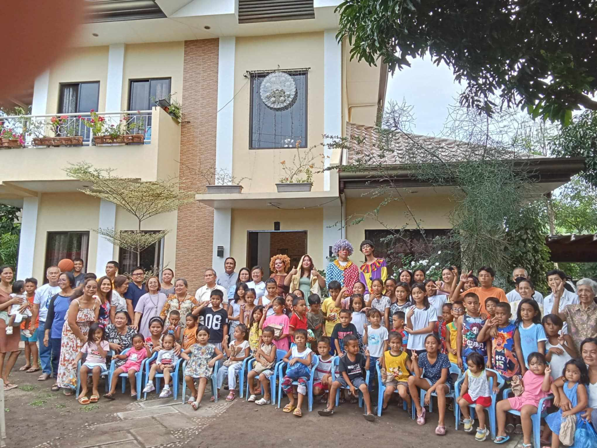
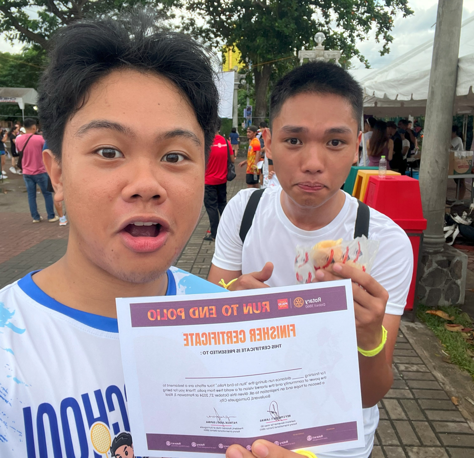
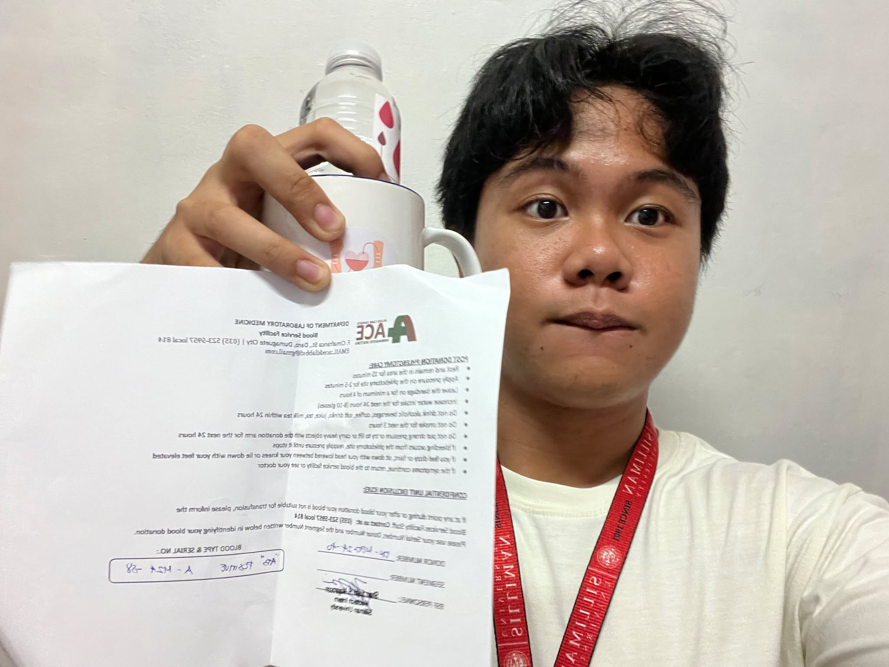

The Community
Service-learning and volunteerism are vital components of all academic disciplines in the university. Students are challenged to test theories and principles through actual community work. With identified partner communities, Silliman students develop projects and programs, integrating expertise in business development, health care, legal management, and environmental advocacy. Sustaining this thrust on an international level, Silliman is active in an international service-learning program that aims for cultural understanding and a multi-sectoral approach to addressing social concerns.
Painit – Paghatag ug kainit
Organizer: DOST Scholars' Association of Silliman University
Date: September 16, 2024 – 2 PM
Involvement: assistant organizer/committee heads
Last September, I was told by my DOST Scholar friends that they were going to host a community outreach in the Silliman Campus. This purpose of this activity was to help the personnel of Silliman during the harsh weather conditions that were happening in that week. Being a committee head I was also tasked to invite others to join the outreach.
I initially expected that many people were participating, however when we started, we were only around ten, so we didn’t have much help. But even so, I still found this event interesting and fun. We were giving out snacks, and coffee to the personnel around the campus in hopes of lifting their moods up while they were working during the storm.
For me, this was a really good experience even if the group was a little awkward at first since most of us had only just met during this activity. Giving out these things made me realize that even some help as small as this, could mean something big for others. Something like giving smiles to the personnel of this school is a big benefit since it also helps us have a positive perspective and drives us to initiate these events even more.
Because of this activity, I was able give back even a small gesture to the personnel of Silliman. This opportunity surely gave me a positive impact and made me realize that I should really give time to give out to the community.

Ajong Sibulan Outreach
Organizer: UCCP Sibulan Church
Date: September 22, 2024 – 2 PM
Involvement: Working Committee Member
On, September 22, I participated in an outreach hosted by the UCCP Sibulan Church at Ajong. This outreach was meant to give joy and support to the children in the area. I was tasked as one of the entertainers and I chose to be one of the game masters and dressed as a clown.
Others might think being dressed as a clown would be really embarrassing and uncomfortable, but to me it was the purpose for this that made me overcome those feelings. We were also giving out gifts to the children and conducted fun games with prizes. Seeing their excitement really gave me the motivation to contribute in this event.
This opportunity is important to me because I was able to see the joy of giving. This activities really has benefits in two ways, the feeling of seeing the kids’ joy while participating in fun games and receiving gifts really warms my heart, and it has actually shifted my perspectives. I could definitely continue working in these activities by signing up for outreaches like this.
Because of this activity, I am truly grateful to have participated in since this gave me the opportunity to give back to the children in need in our community. This also made me realize that there are more children in our community that needs our support and that we must give them the opportunities that they need and deserve.

Run to end Polio
Organizer: Rotary District 3860 & Rotaract Club of Dumaguete
Date: October 27, 2024 – 5 AM
Involvement: Participant/Runner
On October 27, I participated in the fun run hosted by the Rotary Clubs of Dumaguete. This event was initiated to support the End Polio Now movement which as started by the Rotary International. Hence, the event title, “Run to End Polio”.
I’ve always participated in fun runs because most of these types of activities have ties with donating for a cause. Another reason I joined was because my cousins also signed up for it and it is always better to jog with people you are close with, at least for me. To me, the idea of participating in a run and being involved alone already probably has an impact on the movement, seems really rewarding. This activity benefits me in two ways since running helps with my health and at the same time, my contribution helps with the community.
Fun runs taught me to be more disciplined and helped me with my health so I would really encourage everyone to join them, especially if it is for a cause. I was even interviewed after the event relating to the movement and the experience, I said that it was really a great opportunity to be part of something as big as this to help out the people affected by polio.
Because of this activity, I am more motivated to support causes like End Polio Now, because of the positive changes that it could do for our community. I encourage everyone to join activities like these, because it is really fun! The experience of running alongside others and having the same purpose makes it fulfilling and boosts promotion of doing social good.

Type Kita: Dugo Mo, Buhay Ko!
Organizer: Silliman University Medical Technology Society & Redshield Fraternity
Date: November 27, 2024 – 9 AM
Involvement: Blood Donor
Last November 27, 2024, I donated blood at the Oriental Hall hosted by the Silliman University Medical Technology Society and the Redshield Fraternity, also in partnership with Allied Care Experts (ACE) Dumaguete Doctors.
I initially expected that I would be rejected from the screening or testing since my blood pressure is quite high, but it turned out to be okay. It was a fun experience overall since it was also my first time, but I did not really get anxious since I’m used to being injected with needles. During a hematoma test, the Med Tech student struggled to get a blood sample from my fingertips because of calluses, they said this is a result of working out and playing the guitar. They even described my hands as “armored,” which made me chuckle.
This experience taught me that if I’ll regularly donate blood, it will lower my blood pressure and cholesterol. I would definitely continue donating blood every once in a while to regulate my blood pressure and improve my health overall. As another benefit, I might as well save the lives of others since I also have a rare blood type (AB+).
Because of this activity, I am even more motivated to stay healthy knowing that my efforts could really help others through blood donations. This activity encouraged me to donate blood regularly since it is very impactful to others while also benefiting my own well-being.
